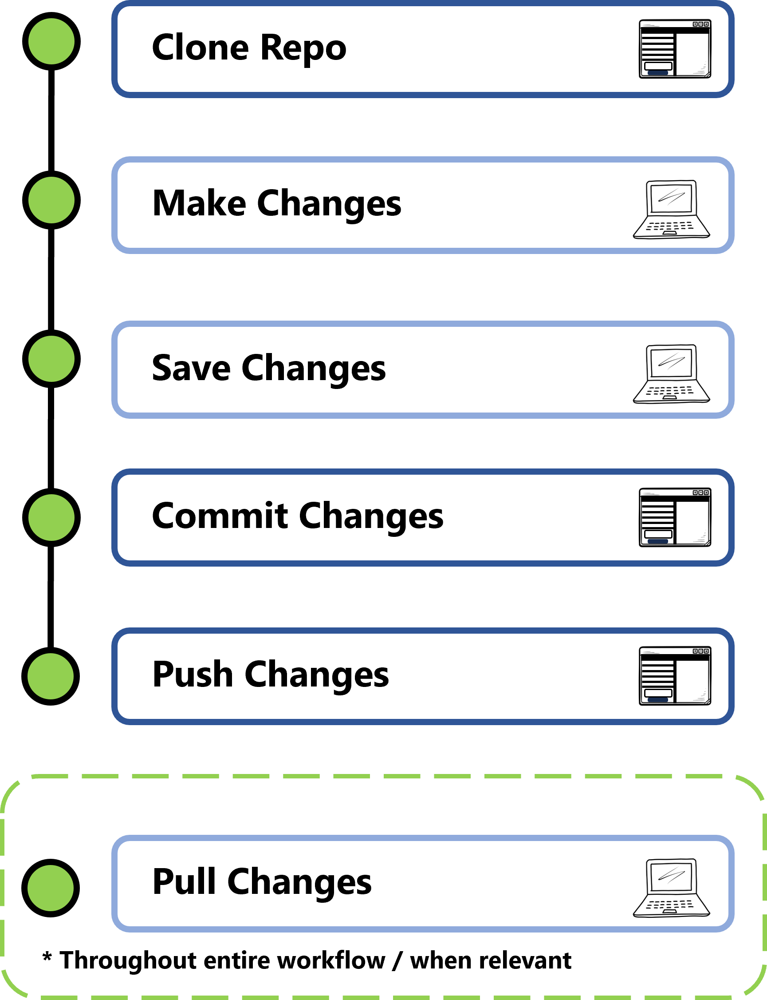
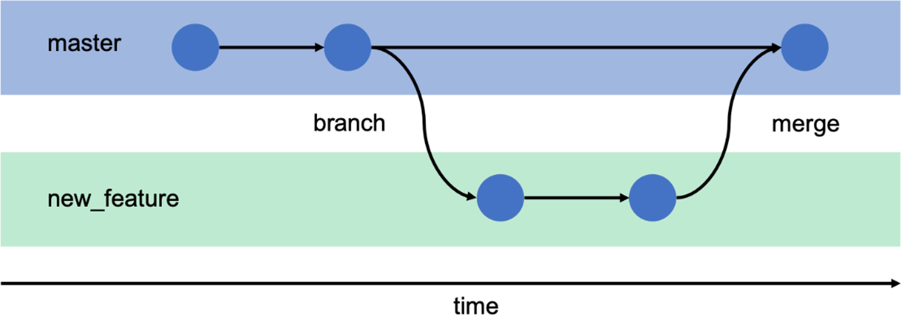
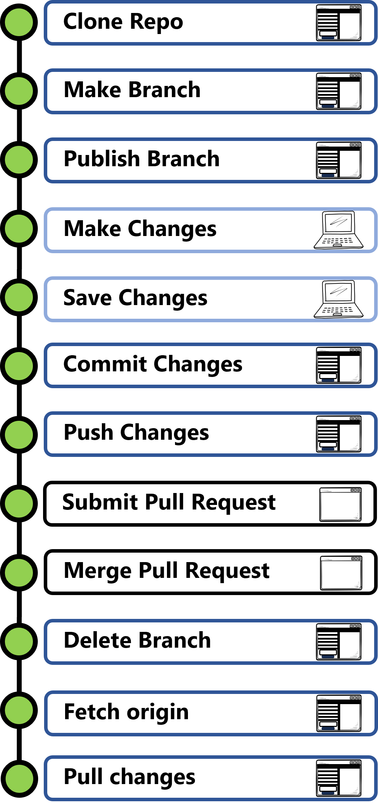
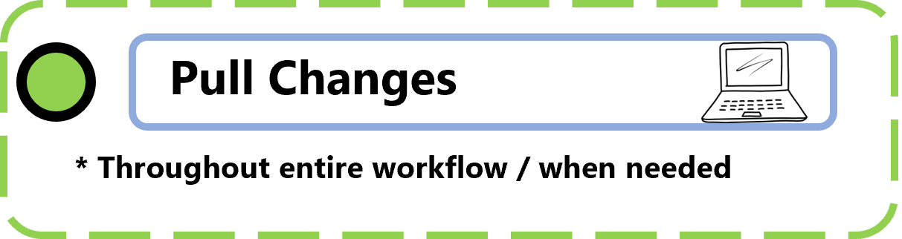

Using GitHub for the Version Control of your Dreams
Introduction
Welcome to the GitHub Introduction Workshop! In this document, we will start at the basics of using GitHub for version control and collaboration and by the end hopefully you will feel equipped with the necessary skills to integrate these practices into your project workflows!
Before we start, make sure that you:
🍄 have a GitHub account
🦩have GitHub Desktop i
🍋 have a positive attitude towards version control and reproducibility :D
What is GitHub?
GitHub is a code hosting platform for version control and collaboration. From anywhere, you and others can work on projects together. Git is a version control software that allows you to store your code and files in one location and keeps track of your changes as you work on a project.
| Features | Git | GitHub |
|---|---|---|
| What | Version Control System | Cloud-based Git hosting platform |
| Why | Tracks changes to files locally | Stores repositories online and facilitates collaboration |
| Where | Locally on your computer | Remote (Online) |
| How | Command Line, VS code, GUI | GitHub.com, GitHub Desktop |
GitHub Desktop is a free graphical user interface (GUI) that simplifies interfacing with Git and GitHub without the need to use the command line. GitHub desktop provides not all but most of the functionality you are likely to need and is a great option when you are just starting to familiarize yourself with using GitHub. It is great if you prefer a visual interface, don’t require advanced Git functionality, and want a simple way to manage individual or small team projects! Everything done in this tutorial can be done using GitHub Desktop
Why do we want to use GitHub?
standard version control
reproducibility
accountability
accuracy
showcasing your work*
*when you go to apply to a job, the first thing your future employer is going to do is Google you and if the job includes coding, they are likely going to look for some of your previous work so using GitHub is a GREAT way to show off your skills - in terms of programming and organization! You can show that you:
a) know how to code
b) have proper code management
c) are willing to share to the open science community
GitHub Basics: Individual Workflow
This section provides a possible workflow that you could replicate when working on your own individual project. A lot of the ways that you will interact with GitHub and version control is based on personal preference (aka what works for you and your project) but there are some best practices that are often recommended. This workflow assumes that you are not collaborating with others on the same repo and is using only the most basic Git functions to store your changes and track your project history.
Let’s start with some terms that you need to know!
Definitions
Git - Core technology that GitHub is built on, designed as an open-source program for tracking changes. The “behind the scenes” program interfaced through GitHub
Repository - (Repo) Analogous to a project folder; Contains all project files and stores the version history of each file. You can decide for this to be public or private depending on your purpose!
Clone - A copy of of a repo that lives on your local computer instead of on a website’s server
Commit - A “revision” that is an individual change to a file or set of files. When you make a commit to save your work, Git creates a unique ID (a.k.a the “SHA” or “hash”) so there is a record of the specific changes committed along with who made them and when.
Push - When you successfully push changes to a remote repository, you update the remote branch with changes from your local branch.
Pull - Bring changes from remote branch to your local branch.
Origin/remote origin - the upstream repo i.e. the one hosted on GitHub.com
use this key to remember where each action should occur

Example workflow

Using this example you can replicate the following steps:
- Clone repo
this makes a copy of the repo on your local computer
there is still a “link” between your local clone and the remote origin
when you make a clone, this will appear as a folder on your local machine where you will work from
Make Changes
this could be adding new files, editing existing files, anything that is part of your usual work that you want to keep track of!
business as usual as you work on your project!
Save Changes
- Save files normally
Commit Changes
Commit early and commit often!
lump “bite size” amount of change into commits
a commit is tracked using Git - a unique hash is generated
add a USEFUL and CONCISE comment and description to each of your commits so they are easy to refer back to later
Push Changes
Push (i.e. send and save) commits to remote origin
Can push multiple commits
commits will be reflected on GitHub.com and visible to you and other users who have access to the repo
*Pull Changes
pull changes to remote local
updates your local clone to reflect all changes pushed to remote origin
less relevant if it’s just you working on your scripts!
Tips
- Commits should contain similar types of edits so if you need to go back to a certain stage, it is easy to isolate where you made certain changes
- make thoughtful commit summaries and description - you will thank yourself later
- it makes your life exponentially more difficult when you have to go back to your code sometimes YEARS later and see that your commit comment says “lots of changes, fixed model” instead of something actually useful and descriptive of the chunk of changes you made
- DO NOT STORE YOUR DATA IN YOUR GITHUB REPO - it’s okay to store some test data especially if you are making your methods and code open source however GitHub has limited file space and there are better places for you to back up your data - Try to only store code and documents on GitHub
 More on this later
More on this later - General rule: Push your changes at least once a day but only if it makes sense i.e. you want to keep your changes :)
GitHub Basics: Collaboration Workflow
So now that you are a pro with tracking changes for an individual project, now we will go over a workflow that you could adopt when collaborating on a project. This workflow is geared towards multiple people sharing code and working on different feature development or tasks simultaneously.
For example, imagine that you’re a consultant working on a team of remote sensing analysts who are working on a project for one of their clients. Your goal is develop a machine learning model that predicts harmful algal blooms in the Salish Sea using future climate scenarios and Landsat imagery. Your deadline is coming up for this project and you have a working model but you think there is an opportunity to make it better. You are working on fine tuning model parameters and your coworker is simultaneously working on developing an RShiny app for the client to be able to easily use and interact with your model outputs.
Using the Individual Workflow, you might run into some compatibility issues since every time one of you change the repo, the other person would have to pull their changes down and keep their clone up to date with the remote origin. If your repos get out of sync, you may not be able to push your commits if Git can’t figure out how the version history works out … thank goodness we have other Git functionality available to us to work around this issue!
Some new definitions to help with your collaborative efforts!
Definitions
Branch - A parallel version of a repo that is contained within the repo. A branch allows you to work freely without disrupting the “live” version of the code. Whenever you make a new repo, the initial repo branch, and where you should store the “live” version of the code, is called ‘main’. New branches can be created for developing and testing new features without having to initially incorporate them into the “main” branch. When you are happy with your changes and want to bring over your new features to the “main” branch, you submit a pull request and eventually merge your branch onto the main branch

In our example, my coworker and I would each make a new branch from main. On my branch, I can edit model inputs and try different weights without changing the working version of the model that is nicely stored away on the main branch. On theirs, they can develop the GUI and test the functionality using the working model, without seeing my model tuning, before merging the finalized Shiny app into the main branch.
Pull Request - Proposed changes to a repository submitted by a user and accepted or rejected by a repo’s collaborators.
Merge - takes the changes from one branch (in the same repo or from a fork) and applies them to another
Fork - personal copy of another user’s repo that lives on your account. Allows users to make changes to repo without affecting the original. User’s can still open a pull request to merge changes to original repo. Great if you want to use someone’s code without making changes OR editing code for your own purpose if you don’t have write access to the original repo.
Example workflow


Using this example you can replicate the following steps:
Clone repo
Make a Branch
- makes a parallel version of the repo
Publish Branch
tell GitHub that you have made a new branch
otherwise you won’t see this on your remote origin, only on your local machine
Make Changes
Save Changes
Commit Changes
Push Changes
- commits are send to remote origin of NEW BRANCH not main
Submit Pull Request
Request to bring changes from your new branch over to the main branch
Changes will be reviewed by repo maintainer
potential to request changes, undergo review at this stage
Merge Pull Request
- Bring Changes over
Delete Branch
Remove branch on your GitHub Desktop and GitHub.com
this seems to keep things cleaner
Fetch origin
return to main branch on GitHub Desktop and fetch origin
checks if there are changes (which there should be after you
Pull Changes
- bring merged changes into main branch on local
*Pull Changes
- If someone else merges a branch or makes changes you can still pull these changes to your development or main branch during your workflow
Tips:
- keep things organized and stay up to date with remote origin
Tips & Tricks for an efficient Workflow
Do’s and Don’t
| DO |
|
| DON’T |
|
Other Ways to use Git and GitHub
RStudio
command line
VSCode
Jupyter Notebooks
Setting up a GitHub Repo
When you are starting a project for the first time you can go to your GitHub account > Repositories and click “New”. You can then write a nice project description, chose if it will be public or private, add a README file (this will show up on the main page of your repo) and add a .gitignore template file. Click “Create repository”
a .gitignore file allows you to tell Git which files or folders in your Git folder to ignore so you don’t have to track unnecessary files. This often keeps things clean and greatly reduces the number of files in your repo.
Permissions
When setting up a GitHub repository you can decide if you want your repo to be Private or Public.
Public repo - Anyone can view them but only authorized users can make changes
Private repo - only selected users can view and modify them
You can also decide the level of permission for different users for your repos.
| Role | Description | Read Access? | Write Access? |
|---|---|---|---|
| Owner | full control over repo | ||
| Administrator | can manage settings, collaborators, and branches | ||
| Write | can push code, create branches, and open pull requests | ||
| Read | Can only view the repo | ⛔ | |
| Maintainer | Manages teams and workflows for organization |
To manage this you can go to your repo > settings > collaborators and teams and then click “Add people” and add their GitHub username or email. You can then chose their permission level.
File Organization
Best practice is often to use a file structure that is easy to follow, is easy for others to contribute to, and is scale-able! As you’re getting started on a project, take the time to set up a logical file structure that will continue to work for you the longer you work on your project! It is MUCH harder to do this after you have started a project and already have a ton of disorder in your file structure. This also makes your GitHub repo more attractive to other users - it makes you look like you know what you’re doing and it will make them want to bother looking through your code!
a good place to start may be….
my-project/
│
├── docs/
│ ├── index.md
│ ├── installation.md
│ └── contributing.md
│
├── data/
│ ├── src
│ │ ├── landsat.tiff
│ │ └── MODIS.tiff
│ ├── input
│ │ ├── training.csv
│ │ └── testing.csv
│ ├── model_outputs
│ │ └── output.csv
│
├── scripts/
│ ├── clean_input_data_01.R
│ ├── merge_landsat_MODIS_02.R
│ ├── run_rf_model_03.R
│ └── generate_boxplot_04.R
│
├── figs/
│ └── boxplot.png.md
│
├── .gitignore
├── README.md
├── LICENSE A tip: think about your syntax style and stick with it! It is a nightmare to look at one folder and see a mixture of these….
my_file_names.py
FileName.py
file-name.py
a useful reference: https://www.britishecologicalsociety.org/wp-content/uploads/2017/12/guide-to-reproducible-code.pdf
README
what is a README?
The first thing that people shuold see when they visit your GitHub page! It’s an information doc that helps explain your project, attract contributors, and improve usability. It makes your project look exponentially better if you have a nice, pretty, and organized README.
It should contain:
project description
installation instructions (for packages)
usage guide
screenshots/demos
how others can contribute
license and co-authors/partnerships/sponsors
A good example: sgsR package repo (tgoodbody)
GitHub Issues
GitHub Issues is a task tracking and project management tool built directly into GitHub repos. It can help you oranize work, track progress, and collaborate efficiently. It is useful for tracking bugs, assigning tasks, labeling issues, and linking issues to PRs
GitHub CoPilot
As you work with GitHub, you may want to use CoPilot. It is an AI-powered code assistant developed by GitHub and OpenAI. It helps by providing real-time code suggestions, autocompletions, and functions based on comments or existing code. You can use it through VSCode and it is free for students!
Activity
Sign into your GitHub Account
Navigate to the FCOR-599 GitHub tutorial Repo
Clone the GitHub Repo to your local computer using method of choice (git, GitHub Desktop, etc.)
Create a new Branch called “LASTNAME_FIRSTNAME_branch”
Publish your new Branch - say “yes I want to make this a fork” since you won’t have write access to the repo
Set up a file organization structure for a new project
Add a README file called “README_LASTNAME_FIRSTNAME.md” and write a brief description that you could use for your 599 project - If you already have one.. Great! Make it better in some way and submit that (add a photo? Change the font? add in your contact info?)
Commit changes
Push Changes to remote origin
Take a screenshot of your GitHub forked repo with your README and template folders and submit to canvas activity
**You will receive a participation grade based on the existence of this branch with your README :)